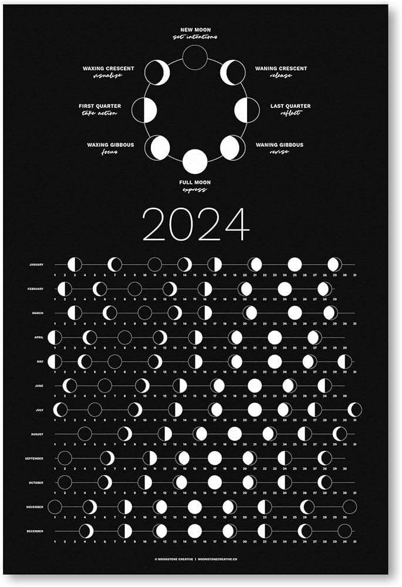

2024 Full Moon Calendar
Moon Names By Month

January - Wolf Moon
The January full moon is known as the Wolf Moon or the Cold Moon. It's a good time for connecting with your higher spiritual power and reflecting inward. Now is the time to start thinking about the seasons ahead.
February - Snow Moon
The February full moon is known as the Snow Moon, the Hunger Moon, the Ice Moon and Quickening moon. This is the season of Imbolc and a good time to think about what you would like to achieve during the coming seasons.
March - Storm Moon
The March full moon is known as the Storm Moon or the Worm Moon. This is the season of Ostara, celebrating the start of springtime. March is a good time to start planting seeds - both literally and figuratively, in order to bring new things into your life
April - Pink Moon
The April full moon is known as the Wind Moon or the Pink Moon. The season of love and conception, April is a good time to focus on romantic relationships, conceiving a child, and taking continued actions toward your goals.
May - Flower Moon
The May full moon is known as the Flower Moon. As spring blossoms more fully in May, now is a good time to look at tending to your own life, including relationships, your career and your self care. Take action to make sure the seeds you planted continue to grow and thrive.
June - Strawberry Moon
The June full moon is known as the Strawberry Moon or the Honey Moon. June is a time to celebrate the longest day of the year with Litha and the Summer Equinox. Spend time outside, enjoying the long days and abundant sunshine.
July - Meadow Moon
The July full moon is known as the Meadow Moon, Blessing Moon or Buck Moon. July is traditionally the warmest month of the year in the Northern Hemisphere and as such is a good time to relax, meditate and reflect on your life. It is also a good time to think about how you can bring more positive things into your life
August - Barley Moon
The August full moon is known as the Barely Moon, Corn Moon or Sturgeon Moon. The first harvest of Lughnasadh is celebrated in August and it is a time to celebrate all the work and toil of the past months, while still planing ahead for winter.
September- Harvest Moon
The September full moon is known as the Harvest Moon, Singing Moon or Wine Moon. It is a time celebrate the balance of light and dark, with the Autumn Equinox and Mabon. As the Wheel of the Year comes to an end it also a good time to give thanks for all the blessing in your life.
October - Hunter’s Moon
The October full moon is known as the Hunter's Moon or Blood Moon. Aligning with the celebration of Samhain, October is a good time to honor loved ones who have passed on. It is also a good time to do spiritual and physical house cleaning, getting rid of what doesn't serve you in the coming year, be that bad habits or clutter in your home.
November - Beaver Moon
The November full moon is known as the Beaver Moon or the Mourning Moon. The first full moon in the Wheel of the Year, November is a good time to cultivate healthy habits and continue to let go of negative energy.
December - Cold Moon
The December full moon is known as the Cold Moon, Big Winter Moon or Long Night's Moon. It is a time to celebrate Yule or the Winter Solstice and the return of longer days. Spend time with family and friends and celebrate the beginning of winter.